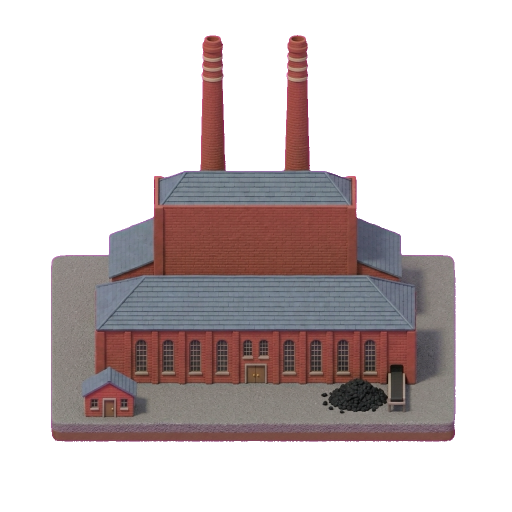
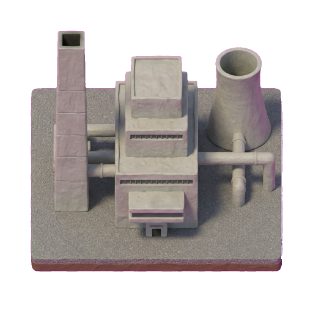
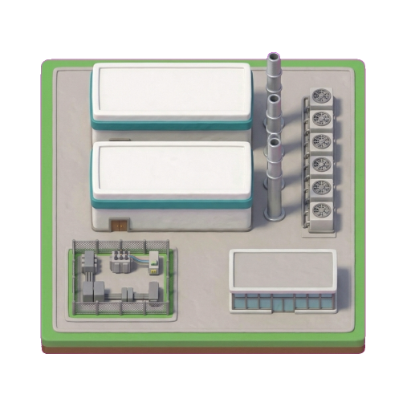
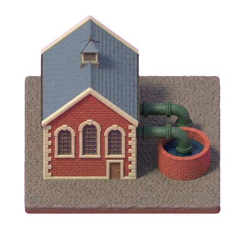
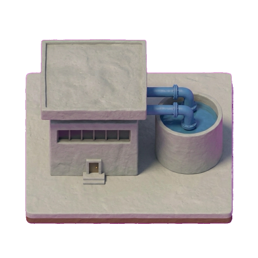
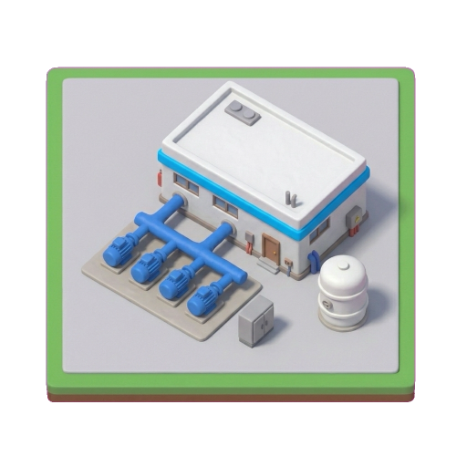
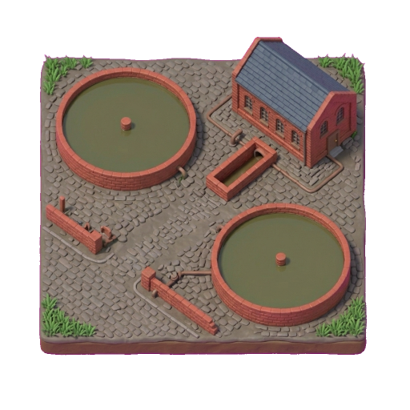
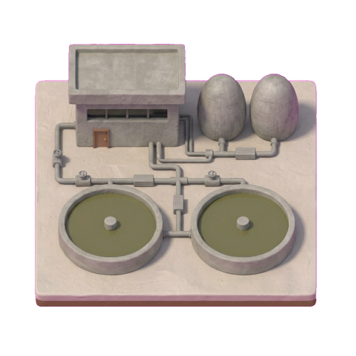
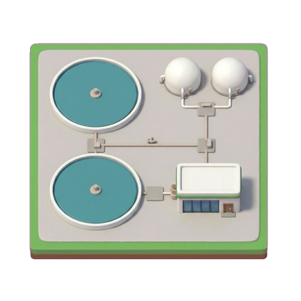

Three styles for each of the three big plants: heritage (brick, slate), brutalist (raw concrete) and modern (white, clean). Each is shown large, then at game size next to houses already in the game. Mark Yes or No, add a note, then Copy feedback at the bottom and paste it to me. Or just tell me the codes. You can pick a different style for each plant.
Nothing here is in the game. The plants still use the code-drawn stand-ins until you pick.
What code will add, as on the stand-ins: smoke and steam from the stacks and cooling tower, turning skimmer arms on the sewage pools (the pools are deliberately bare, with just a centre post), ripples in open water, and the pump's intake pipe running to whichever side the water is on.
The camera is wrong on most of these (owner's feedback): P1, P2, W1, W2, W3, S1 and S2 came out in a three-quarter, isometric view, where the game's buildings face straight on. P3 and S3 are in the right view. P4 is P2 redone facing front, with a stricter prompt, to show the fix works. Judge the others for their style and contents; the ones you like get redrawn facing front.
12 paid images so far (2 references, 9 designs, 1 front-facing redo): all of the 12 you approved. Redrawing the rest facing front needs your go-ahead.
Large power plant (3×3)

P1Heritage
Red-brick turbine hall and boiler house, two brick chimneys, coal pile with a conveyor. Smoke from both chimneys.

P2Brutalist
Stepped concrete boiler house with a cantilevered control room, square stack, cooling tower, pipe bridges. Steam from the tower, smoke from the stack.

P3Modern
Two white turbine halls, three steel stacks, a row of cooling fans (these could spin), transformer yard, glass control building. Closest to the game's usual camera.
P4Brutalist, facing front
P2 redone in the game's own view: stepped boiler house with the control room over the entrance, square stack, cooling tower, straight pipe bridges. This is the camera the redraws would use.
Water pump (2×2, beside water)
The pump can face water on any side, so the art has no intake of its own: code draws the pipe from the plant into the water, as on the stand-in.

W1Heritage
Victorian brick pump hall with arched windows and a roof lantern, cast-iron pipes into a brick well. Ripples in the well.

W2Brutalist
Concrete pump house under a thick floating roof slab, blue pipes into a concrete drum. Ripples in the drum.

W3Modern
White pump hall with a blue band, four blue pump motors on a manifold, a surge tank. No open water of its own.
Large sewage plant (2×2)

S1Heritage
Brick-walled settling tanks, a brick works building, an outfall channel. Skimmer arms turn on both tanks.

S2Brutalist
Concrete clarifiers, two egg-shaped digesters, a control block under a floating slab. Skimmer arms turn on both tanks.

S3Modern
White-rimmed clarifiers, two domed digesters, a white control building. Closest to the game's usual camera. Skimmer arms turn on both tanks.
Anything else
Reference images
These fix the scale for the bigger plots: the same slab and camera as every other building, holding 2×2 and 3×3 of the standard house. Each candidate above was made by editing one of these.